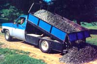
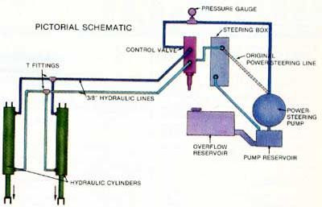
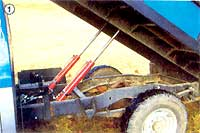
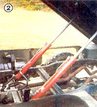
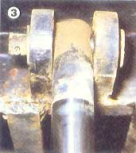
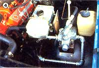
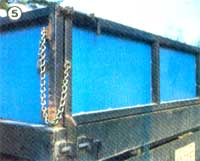
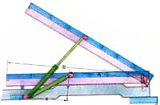

Leroy's Power Steering Dump Bed
This homemade pickup conversion may very well be next year's hottest Detroit option.
The Mother Earth News staff
January/February 1985
This homemade pickup conversion may very well be next year's hottest Detroit optiona!
As anyone who owns one can tell you, a truck's a mighty handy vehicle to have around. The trouble is, once you've stuffed it to capacity, you eventually have to face the prospect of shedding the load... and, no matter what you're hauling, that always means work.
Often (especially when the cargo is gravel or manure) that particular task is one most folks would rather let someone else do. Well, our Eco-Village director, Leroy Richter, has discovered a willing "volunteer" that's available every time he cranks his rig over: the truck's original power-steering pump.
That's right! Unlikely as it sounds, Leroy has successfully tapped the force supplied by that commonplace factory-installed component and directed it to a pair of hydraulic cylinders mounted to his vehicle's chassis. By engaging a control valve from inside the cab, he can activate the pistons which push the rear-hinged truck bed upward... dump the load... and then reverse the valve to force the double-acting cylinders and bed back down against a pair of stops. It's simple; it works; and it cost him about $500 in materials (including a new bed!) and a full week of work to complete.
BED-BUILDING BASICS
The dump-conversion project started a year or so ago when Leroy purchased a utility company's 1975 Chevy 3/4-ton fleet truck at auction for $1,095. Though mechanically sound, the vehicle's sheet metal needed repair, and the service bed had been removed, leaving a bare chassis. His first step, then, was to obtain a bed and work up a reliable hinge mount for it. Rather than scour the wrecking yards for a conventional pickup box (which would have been expensive and somewhat limited in capacity), Mr. Richter opted to fabricate his own bed by using channel iron, square steel tubing, and heavy-gauge sheet metal.
Two 95"-long sections of 5" channel serve as the bed's main structural components, which in turn support six 3" cross members... five 80" in length, and one only 48" long (to allow two short bridges to be welded in over the rear axle area). A perimeter frame of 4" channel iron ties the cross members together, and 2" X 6" gussets at the main rail joints strengthen each junction.
The bed floor is made of 14-gauge sheet metal, and nine .080" X 1-1/4" X 13" up rights-topped with rails of [he same material and covered with 16-gauge steel panels-form a substantial frame. Leroy also added an 18 "-high forward cab guard (made of square tubing and expanded metal) to protect the rear window and to provide convenient tying points.
The 14-1/2" X 76" tailgate follows the same construction pattern and is hinged at both top and bottom for dumping or oversize hauling. Sliding 1/2" X 8" hinge pins, mated to angle and channel iron brackets, allow the gate to be removed completely if desired. And to support especially heavy tail loads, the lower hinge arms are fabricated from 3/8" X 1-1/4" X 4-1/2" stock.
Critical to the success of any dump-bed design is the rear hinge setup, which, in this case, is made from 3" channel iron, 1" steel pipe, and some cold-rolled rod. Two 3" X 10" channel iron posts, boxed at the top end for extra strength, are bolted and welded to the truck's chassis rails at the rear. Two-inch lengths of 1" Schedule 40 pipe, welded through the posts, serve as bushings for the 1" X 40" hinge pin, which is locked to the bed through similar pipe mounts that are boxed and welded to the bed's main rails.
SIMPLE GEOMETRY
With the bed, tailgate, and hinges finished, Leroy was faced with an important decision: where to mount the hydraulic cylinders. The 2-1/2 "-bore units (which were salvaged from an industrial press) have a stroke of 24" and an overall length of 56". Given a pressure of 1,200 pounds per square inch (psi), the pair has a straight load-lifting capability of 11,780 pounds... but since they had to be mounted at an angle (to push upward as well as rearward), some of that capacity was sacrificed to geometry.
So, the final placement of these components represents a compromise between the cylinders' physical limitations and the available structural mounting points on the truck and bed frames (see diagram). One cross member on the latter component was just forward of the bed's halfway point, so Mr. R chose that as the upper mount. Then, by chaining the nose of the bed to a tree limb and driving forward a little, he was able to trial-fit the extended cylinder and mark a spot on the chassis rails that'd allow a bed tilt of 32° but would still permit the cylinders to tuck away nicely with the bed lowered. (Actually, Leroy admits that he would have preferred a clean 45° lift angle, but he'd gotten a good price on the cylinders and decided to work with them the best he could, rather than look for a more suitable-and more expensive-pair.)
The cylinders' upper clevis eyes are locked with 3/4" cold-rolled pins to 3/4" X 2-1/2" X 4" brackets on the bed crossbar. Leroy fashioned the same type of brackets for the lower eyes, but in that case welded them to a 3/8" X 3" X 33-1/2" section of angle iron, capped its ends, and mounted it between the frame rails at the spot he'd previously marked. (Since truck chassis are tempered, he purposely did not make a weld joint at this high-stress point, relying instead on hardened 1/2" bolts.)
Finally, to secure the bed against lateral shifting, he made up two descent guides of 2" X 15" channel iron, splayed one end of each out slightly, and faced the flanges with 3/16" X 2" flat stock. These guides were fastened to the chassis about a foot behind the rear of the cab so that the bed's main rails would settle snugly between the guides when lowered. Two short sections of channel welded to each guide (flanges facing) and capped with a 3/16" X 2" X 2" plate serve as rest stops for the bed's unhinged end.

Cylinder Position
The cylinder mounting angle is critical because it affects both the payload capacity and the maximum tilt of the bed. The diagram above can be used 10 roughly calculate any homebuilt system's maximum capacity, using this formula:
It may look complicated, but figuring it out is simply a mailer of establishing
A, the distance between the bed's rear hinge pill and the cylinder's upper mount;
B, the distance between the bed's rear hinge pin and the front of the bed;
X, the length of a line parallel to B, measured between the cylinder's lower mounting pivot and the line's intersection with...
Y, the distance perpendicular to A and X, between the upper cylinder mount and X;
R, the radius of the pistons within the cylinders;
P. the maximum operating pressure of the power-sieering pump (most are limited in about 1,500 psi with an internal dump valve).
Note that the rear hinge posts must be at least 2" forward of the bed frame to allow clearance at
maximum lift.
FLUID DRIVE
The most attractive feature of this dump-bed conversion is the fact that it's relatively inexpensive... in large pan because the power-steering pump is plumbed to do double duty. In essence, instead of supplying high-pressure fluid directly to the steering box, Leroy's pump now delivers its load-through a pressure gauge and into a four-way hydraulic control valve. (The only modification necessary was to replace the existing reverse-flared hose fitting with a standard pipe-thread coupling.) From there, one of the valve's working ports is plumbed to a splitter-simply a glorified T fitting-the two outlets of which are, in turn, connected to the lower chambers of the hydraulic cylinders.
The upper chambers of the double-acting cylinders are likewise joined through a T and plumbed to the control valve's other working port.
To complete the fluid circuit, the valve's outlet port is tied back into the steering box (through a reverse-flared fitting), and the box is plumbed to the pump return port in the standard fashion. Of course, as he would with any hydraulic circuit, Leroy was careful that all the lines and both sides of the cylinders were filled with fluid, to assure that no air pockets were trapped in the system, before he made the final connections.
Under normal driving conditions, with the bed down, the three-position four-way valve's open-center design allows pressurized fluid to bypass the working ports and travel directly to the steering box, which is essentially what it did before Leroy's modifications. But once the valve lever is pulled to activate the lifting cycle, "live" fluid is directed to the cylinders' lower chambers... which lifts the bed, but also simultaneously forces fluid in the upper chambers to exhaust past the unused working port, through the open return circuit in the valve, and into the steering box, where it's returned to the pump reservoir.
Conversely, when the control valve lever is pushed to lower the bed, the cylinders' upper chambers are pressurized... and the evacuated fluid on the pistons' opposite sides is relieved through the valve as before. To compensate for the additional fluid required by the cylinders, fittings, and extra hoses, Leroy simply cut a hole in the side of a 1-gallon fuel tank, brazed a 1-1/2" collar over the opening, and joined the fender-well-mounted tank to the neck of the pump reservoir with a length of radiator hose. Though the neck cap fits the tank, he's had to work up a baffled vent that doesn't allow returning fluid to escape with the pressure.
PUT TO THE TEST
Though our Eco-Village director has been using his rig daily for about a year now, there are a few people around here who still say what he's done is impossible. Nonetheless, the unassuming little power-steering pump was designed to put out up to 1,500 psi at a rate of about 2 gallons per minute... and any way you cut it, that's enough to accomplish the job at hand.
The truck has, in fact, repeatedly hauled and dumped 6,000-pound payloads of 3/4" gravel with no mechanical difficulties. Leroy has enough faith in its ability to continue doing so that he recently took the time to build up a chassis-mounted angle iron framework that holds a set of homemade utility boxes for beneath-the-bed tool storage, and to add another cross member and a 3/4" X 2-1/2" X 18" tongue to support a large ball hitch.
A quick look at expenses shows, that the conversion is economically feasible, as well. The two used cylinders cost Leroy an even $100, and a surplus four-way valve set him back $60. The 26-odd feet of 3/8" hydraulic hose, the pipe, and the fittings came to just over $100, and all the channel iron was purchased used for $101. The $156 worth of new sheet metal brought the grand total to about $520... considerably less than the $2,485 MOTHER paid for the store-bought bed and dump mechanism used on her one-ton Eco-Village flatbed!
As with any first-time project, Leroy feels that there'd be room for improvement the second time around... but not a whole lot. Specifically, he'd use oii-impregnated bushings at all the clevis pins and probably build a double wall into the bed sides and tailgate. Even so, the rig is worth its weight in contractor's fees, according to its owner, who didn't even realize how much he needed a dump bed until he took the time to build one himself.
EDITOR'S NOTE: If you're interested in adapting this homebuilt power-steering dump bed system to your own truck but would prefer detailed, step-by-step instructions, we've put together a set of plans that will fully explain the modifications described in this article and will help you in applying them to your vehicle's configuration. The plans package is available for $15 plus $1.00 for shipping and handling from Mother's Plans, Dump Truck, P.O. Box A, East Flat Rock, NC 28726.
|
 STAFF PHOTOS [1] The bed frame is constructed of 3?, 4?, and 5? channel iron. Note the pipe-and- channel rear hinge setup. |
 [2] The twin cylinders are pin-mounted to a length of angle iron bolted to the chassis rails. |
 [3] This bracket-and-pin mount on the bed crossbar is typical of all the cylinder pivots. |
|
 [4] The control valve is mounted on the inner fender, next to the overflow reservoir. |
 [5] The two-way tailgate. |
 |
|
 |
 |
|